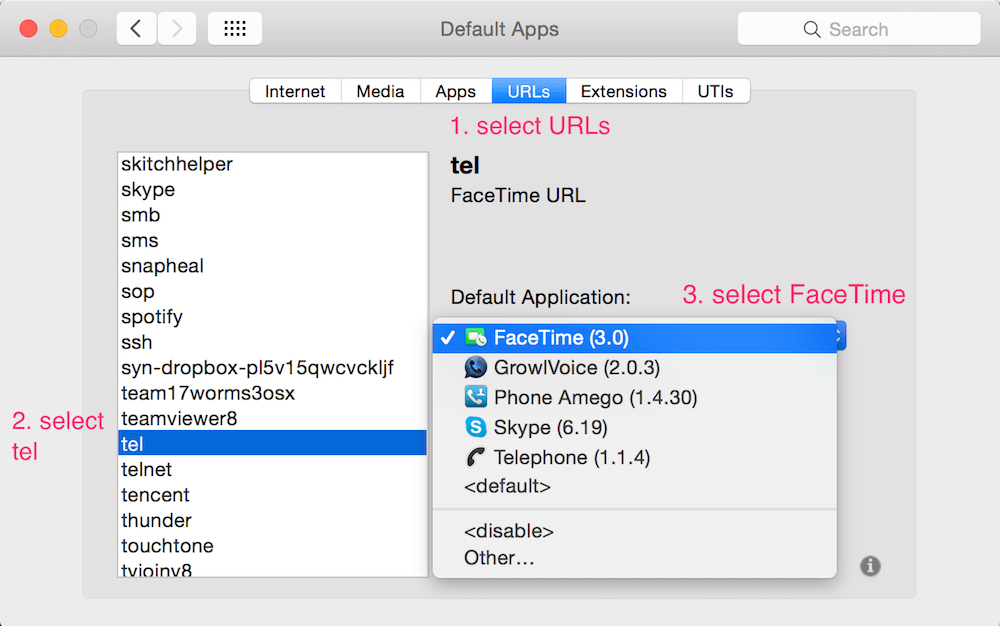

iPhone Call is using FaceTime app to achieve the Yosemite continuity. The URL scheme tel: is used by iPhone Call to communicate with FaceTime app. If this issue happens, it means the other app is taking over your FaceTime app as the default handler for the URL scheme tel:. You can change it back using following steps:
URLs tab, tel and FaceTime in turn as shown below:
All your Uni Call preferences, including call components enabled status, are kept in ~/Library/Application\ Support/Alfred\ 2/Workflow\ Data/net.guiguan.Uni-Call/config.plist. When you have upgraded or reinstalled Uni Call, you may need to invoke:
call --updatealfredpreferences yesto synchronise Uni Call’s preferences with Alfred’s. Then, wait for several seconds, and retype your queries, which should be okay by then.
When you flip a call component’s enabled status, there is delay between Uni Call and Alfred’s preferences becoming perfectly synchronised. So wait for several seconds, and retype your queries.
If you are still using traditional mechanical hard-drive on your Mac, this is unfortunately unavoidable. Because the OSX Address Book API needs hard-drive access on start. If you are using SSD but still experience the same issue, please contact me :P
This can happen if you have set the birthday field of a contact in your Apple Contact and have turned on birthday alert (Calendar > Preferences... > Alerts > Birthdays) and at the same time that contact is on birthday today. The OSX Address Book API that Uni Call uses will trigger such birthday alerts when saving changes made to contacts. Unfortunately, this cannot be avoided.